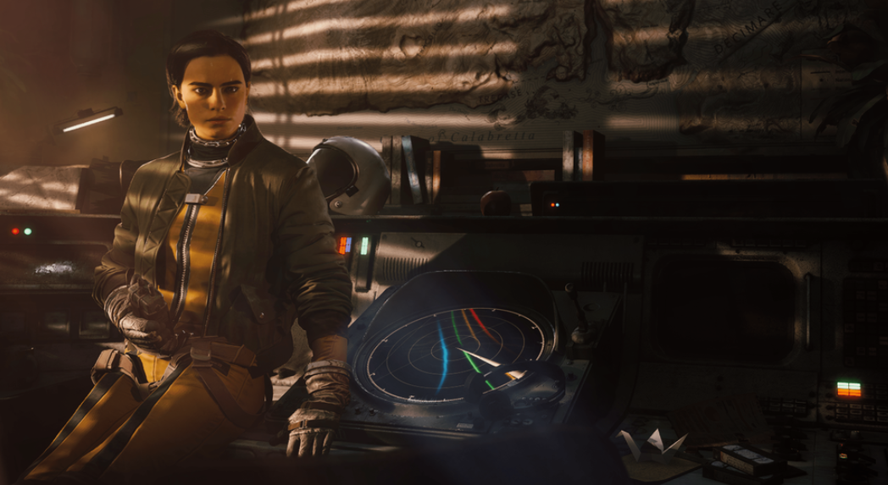

Селеста
29 января 2026
Харизматичный лидер рейдеров в Сперанце, Селеста является вездесущим символом надежды для человечества в подполье. Как лидер рейдеров, она отвечает за поддержание боевого духа, даже когда атаки ARC усиливаются, и когда случается трагедия. В то время как она старается не напрягаться, вы можете застать ее за разработкой стратегии до поздней ночи, за яростной игрой в дартс у бара и за чашечкой кофе в течение всего дня, чтобы не сомкнуть глаз.